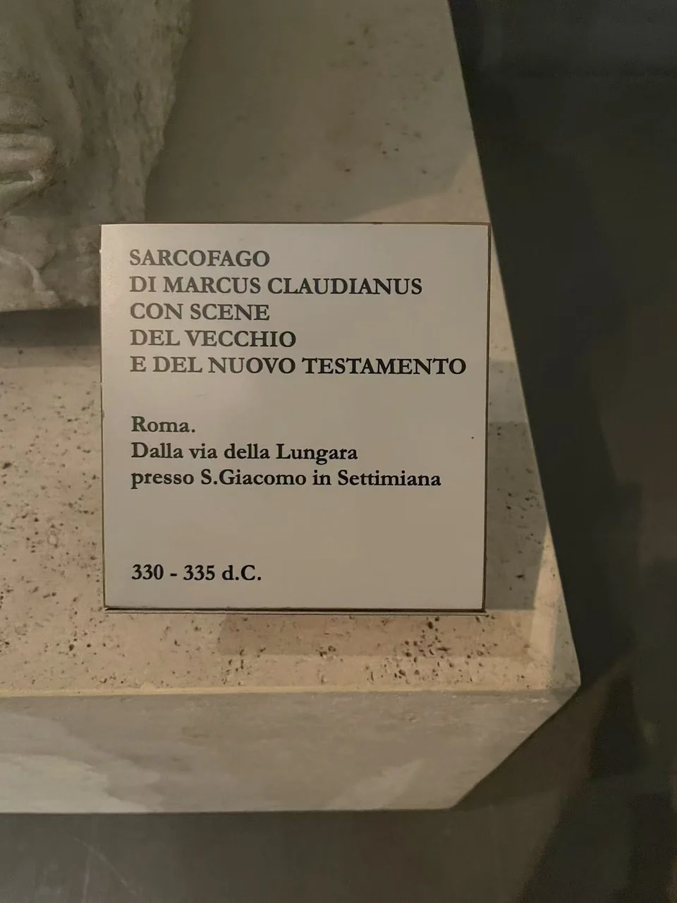

ROMAN SARCOPHAGI / R10
马库斯·克劳狄亚努斯石棺
棺身的长列人物中，手势和少量器物把不同的救助故事逐一分开。

- 年代
- 330–335年
- 材料
- 白色大理石
- 收藏
- 罗马国家博物馆
- 观看地点
- 罗马国家博物馆·马西莫宫 · 罗马
- 馆藏号
- 455（NASSCAL记录）
- 发现地记录
- 罗马Via della Lungara，San Giacomo in Settimiano教堂附近
从相似人物中找情节
人物披衣接连排列，中央举起双手的祈祷者与两端神迹场面共享同一石面。NASSCAL目录辨认出彼得相关情节，以及基督变水为酒、增饼、治愈与使拉撒路复活等图像。它们靠手势、容器和小型建筑提供线索，而非用边框逐幕切开。 [13]
棺盖与棺身分别观看
紧接棺身上方的完整横条是棺盖，中央为铭文板，两旁有诞生、人物肖像及葡萄采收等内容，与学会目录描述相符。照片更上方的两块残片属于同一展陈背景，现有资料不足以确认其配属。目录记本件1884年发现于罗马隆加拉街。 [13]
现场展签 · 1张

资料与来源
断代、收藏与文献说明
NASSCAL目录的尺寸单位与部分铭文展开存在不一致，尺寸及完整铭文暂未采用。照片最上方的两块残片配属尚未确认。 [13]